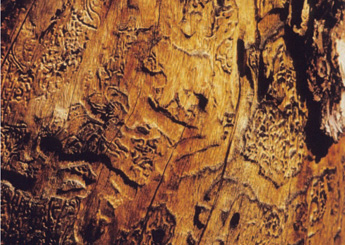

|
| ISSUE #2 |
|
Artist Feature: ernie kroeger  Waterfowl Lake, 2001, detail
Chromogenic print, 66cm X 66cm, Ernie Kroegger Ernie Kroeger - Artist Statement I have had a long-standing interest in landscape narratives and the experience of place, which can be seen in my earlier projects such as Family Stories and The Great Divide. This work led me to examine mapping as well as relationships between image and text. Recently, I’ve been looking at natural forms as a kind of proto-language or writing. When I was living in Alberta, I discovered the phenomenon of bark beetle engravings. The beetles bore through the bark, eat the nutrient rich layer of the sapwood, and as they do this, make intricate and beautiful engravings which eventually kill the tree. Since moving to British Columbia I have learned how serious the mountain pine beetle epidemic has become. This serious infestation notwithstanding, I have come to imagine these natural forms as a kind of proto-language or writing. My impression that the beetle engravings resemble writing was confirmed when I discovered that one species is named Ips calligraphus. In my research I also discovered that beetles are the dominant form of life on earth: one of every five living species is a beetle. Since beetles have been around for millions of years–much longer than humans–I thought that they may well have something to say and thus began my project to transcribe, publish and exhibit some of the beetle writings. I call my method of transcription “frottography”. I make rubbings (frottage) of the beetle engravings on paper and then use them as negatives, placing them in an enlarger and printing them on photographic paper. The inevitable question is: what are the beetles saying? I don’t know, but it’s clear that different species of bark beetles make different and unique engravings. Some follow a course of least resistance while others have no apparent rationale; some follow the grain, while others gird the tree. My goal is to find ways of translating and reading this fascinating pre-human writing. |
This is an excerpt of the full article. To view complete text, please subscribe . You may also purchase a back issue |
Lake publishes fiction, poetry, critical essays, interviews, reviews and visual arts related to the environment.
|
Lake - Journal of Arts and Environment
Faculty of Creative and Critical Studies at the University of British Columbia Okanagan |
| web design by Idea Bureau |